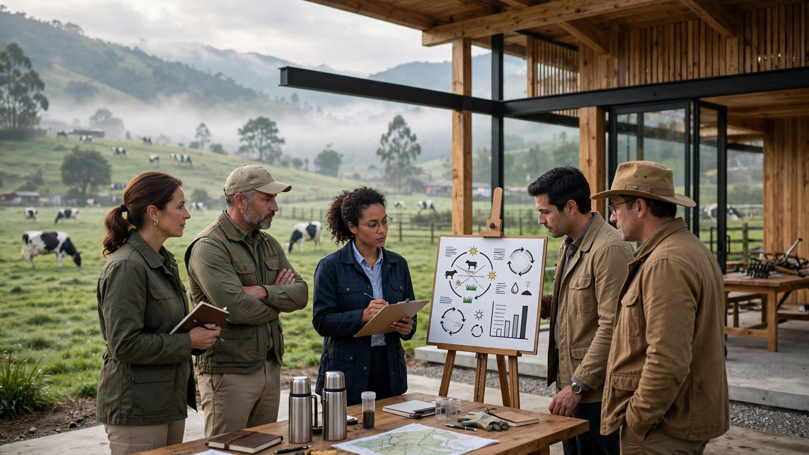

El sistema oficial de precios (USP Leche, Ministerio de Agricultura, Resolución 017 de 2012) reporta un precio regulado de $1.900/litro y un promedio nacional de $2.146/litro para junio de 2026 — que ya incluye bonificaciones voluntarias por composición (hasta $43,22/gramo de proteína, $14,40/gramo de grasa en Región 1). En Susa y Simijaca, en plena temporada de baja producción, el precio de campo reportado es de apenas $2.050–2.070/litro: por debajo del promedio nacional, justo cuando la escasez debería jugar a favor del productor.
El Estado ya opera, en tiempo real, un sistema nacional de precios de leche cruda hasta el gramo de proteína (USP Leche). Lo que no tiene es un punto físico, en el corazón de la cuenca, donde ese sistema se traduzca en asistencia técnica real para quien produce. La brecha no es de información — es de presencia.
Este centro no compite por presupuesto nuevo de formación: se estructura vía ANIM, con suelo ya compatible, sin desembolso de tesoro por parte del SENA. El "retorno" no es una cifra de ahorro — es que el sistema de precios que el Ministerio ya construyó, por fin tenga un brazo físico en la provincia donde más falta hace.
| Instrumento | Disposición relevante |
|---|---|
| Decreto 012 de 2006 (Plan Parcial vigente) | Predio zonificado como Área de Actividad Múltiple (U-M) |
| Artículo 41 — Asignación de usos | Institucional clase I y II: uso compatible, sin trámite de cambio de norma |
| Artículo 67 | La fiducia mercantil ya está contemplada como instrumento de asociación Estado–privados |
La ANIM exige que el predio esté catalogado con uso de suelo institucional o dotacional (o compatible con él) para poder materializar la compra. Este lote ya cumple esa condición hoy, sin necesidad de modificación ni concertación previa con la Alcaldía.
La Agencia Nacional Inmobiliaria Virgilio Barco Vargas (Decreto 2556 de 2015) tiene como objeto formular, estructurar y ejecutar proyectos inmobiliarios y de infraestructura social para el sector público — incluyendo centros de formación como los del SENA — en cualquier municipio del país.
| Mecanismo | Cuándo aplica |
|---|---|
| 1. Enajenación voluntaria | Vía prioritaria — avalúo comercial oficial + oferta + escritura |
| 2. Expropiación (Ley 388 de 1997) | Solo si el predio es técnicamente indispensable y el propietario no acepta vender — infraestructura educativa está catalogada como utilidad pública |
| 3. Asociación Público-Privada (APP) | El propietario aporta el lote a cambio de participar en el desarrollo o concesión del proyecto |
En este caso, la vía de enajenación voluntaria u APP es la más viable: el propietario está dispuesto a negociar desde el primer momento, lo que evita cualquier fricción o dilación propia de un proceso expropiatorio.
Que el SENA (o el Ministerio de Educación) suscriba un convenio con la ANIM para adquirir el predio en Ubaté mediante enajenación voluntaria o asociación público-privada, y ejecutar allí el Centro de Formación y Calidad Composicional de la Leche — aprovechando que el uso de suelo ya es compatible y que el propietario está dispuesto a negociar de inmediato.
Las cifras presentadas son estimaciones y datos públicos de referencia (Asoleche, Fedegán, USP Leche, Minagricultura). Los valores definitivos del proyecto están sujetos a estudio técnico y financiero detallado antes de su ejecución.